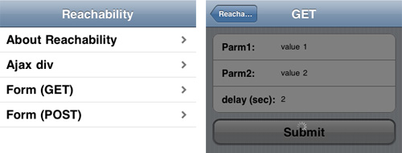

Reachability

Reachability is intended to perform "reachability" testing for hybrid webapps that are wrapped in the UIWebView Cocoa Class. It may also be useful for webapps that are cached using the HTML5 webapp cache -- but hasn't been tested in that configuration yet.
Author: Sean Gilligan
Version: 1.0
- Getting Started
- Frequently Asked Questions
- iUI code documentation
- Advanced styling & themes
Like in most open-source projects, the more we are, the meyer it is! HTML/CSS/JS, documentation, design, translation, ...
Don’t be shy
1. Instructions for use
Note that it is in the early development stages.
iUI has recently been improved so that it provides better handling of network failures during Ajax operations. At this writing that work is still in-process and reachability-demo.html can be used to test that error handling as well.
The best way to test error handling is to use the iPhone Simulator on your Mac with airport disabled -- unplug and replug your Ethernet cable to test error handling and recovery.